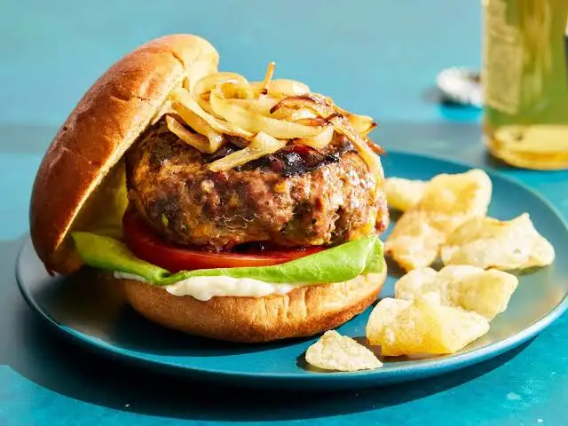

This is a very delicious delicacy, and it's easy to make.

Ingredients
1 large egg
½ teaspoon salt
½ teaspoon ground black pepper
1 pound ground beef
½ cup fine dry bread crumbs
Directions
Preheat an outdoor grill for high heat and lightly oil grate.
Whisk egg, salt, and pepper together in a medium bowl.
Add ground beef and bread crumbs; mix with your hands or a fork until well blended.
Form into four 3/4-inch-thick patties.
Place patties on the preheated grill.
Cover and cook 6 to 8 minutes per side,
or to desired doneness. An instant-read thermometer
inserted into the center
should read at least 160 degrees F (70 degrees C).